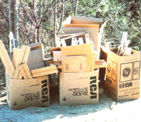
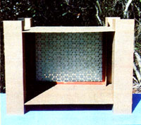
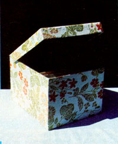
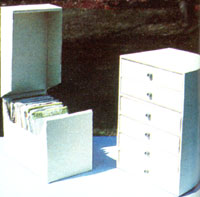
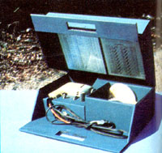
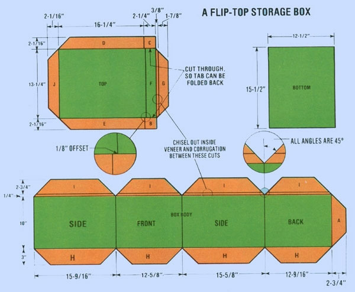

A free material, which is particularly easy to find around Christmas time, can be recycled into some dandy storage containers and furniture pieces.
Some of the most joyous days of my childhood were spent rolling down hills in a discarded refrigerator box. Of course, most people would think it eccentric for a grown man to participate in such an activity (tempting as it might be to do so on occasion), but I still use corrugated cardboard in many decorative and practical projects.
Sometimes I tend to wonder, though, whether I might have banged my head a bit too hard on one of those trips downhill, because most people seem to hold cardboard in low esteem. Very few, in fact, make any effort to utilize this versatile material, which can be had for free-and in quantity-almost anywhere. To us avid recyclers, however, this lack of popularity is a blessing, because it leaves more for us . . . and I'm convinced that cardboard is a downright wonderful substance.
TOOLS AND SUPPLIES
Here are the tools and supplies you'll need to become a cardboard carpenter: a utility knife with spare blades . . . an 18" ruler . . . a five-foot length of 1 X 2 to serve as a straight edge . . . one ordinary pencil and another with white or yellow lead . . . a screwdriver . . . a 45" drafting triangle . . . a carpenter's square . . . a roll of 2"-wide brown paper tape . . . a few large paper clamps . . . a capped Bic ballpoint pen or some similarly bluntpointed tool . . . white glue . . . latex paint . . . and a cutting board made of plywood or heavy cardboard (to protect your work surface without dulling your knife blades).
BUILD UP A SUPPLY
Before I begin any project, I cut a number of flat cardboard sheets from large cartons. I use these, rather than assembled boxes, to construct my projects. The best sources for the "paper planks" are appliance stores that sell such items as refrigerators, washers, and dryers.
Always get permission before you take any boxes, however (snooping around the store's rubbish bins at night could get you an expense paid trip to the nearest police station! ), and be sure to leave the trash pile at least as neat as you found it, even though you have to sacrifice some perfectly useful boxes to serve as catchalls for the clutter you remove from the best cartons. (You'll probably run across boxes with two or three rows of corrugation in the core, but it's best to begin by learning to work with material made of a single corrugated thickness between two face veneers. You can check the construction of the cardboard at any exposed or cut edges that are perpendicular to the "grain".)
Once you've made your selection, cut the boxes' bottoms off with your utility knife and slice the sides apart. Each box, then, will produce four separate side panels for you to take home.
A SAMPLE PROJECT
Probably the easiest way to learn to build with cardboard is to assemble the flip-top box pictured here, since its construction involves most of the basic techniques you'll need for any other cardboard projects. And, of course, the lowcost, presentable storage container itself will be very handy.
First, to avoid marring your work surface, put the cutting board on a table, countertop, or workbench. Then select a couple of the scavenged cardboard sheets large enough for the project. You'll probably need at least one side from a refrigerator box to form the body of this little storage chest . . . but the top and bottom can be cut from smaller pieces.
Now, lay one section of cardboard on the table with its printed side up. Draw the pattern on this side, so that-when it's assembled-the outside of the finished flip-top box will have no advertising showing. (The white or yellow pencil is used wherever your lines cross any darkcolored areas on the container.) It's best to follow this procedure even if you plan to paint your project . . . because sometimes uneven absorption will allow the print to show through the paint.
THE CUTUP
After you've reproduced the plan on your sheets (following the dimensions shown in the accompanying illustration), cut around each piece with the utility knife. Use your straightedge to keep the lines true and unwavering. First, make a light pass with the blade, then follow up with one or two heavy cuts.
When that's done, slice only halfway through the cardboard along each fold line. The best way to do this is to tilt your knife back toward you until the lower front corner of the handle touches the surface of the cardboard, and then to use that point as a pivot to control the depth of the cut. (This process can be a bit tricky at first, but it'll become easy after a little practice.) As before, make one light cut and then follow with more pressure, being careful not to cut all the way through the material.
Next, use a screwdriver to chisel out the inside face veneer and the corrugations from the areas indicated in the drawing ... leaving a single veneer hinge. These are spaces between two fold lines where the cardboard will have to turn back 180° . . . either onto itself (1/4" space) or over an adjoining tab for assembly (3/8" space).
Along all the other fold lines (which will require finished angles of only 90°), use the capped end of the Bic pen to smooth down the knife cuts. Now, bend the panels-toward the inside of your future box-along each fold line . . . creasing it with your hands as you go.
PUT IT ALL TOGETHER
To assemble your storage chest, take the body section and lay it flat on the table as shown in the plans, with the inside to-be facing up. Fold the right-end panel (the back) and the left-end panel (a side) 180° in upon the other two panels, so that the side panel overlaps the glue tab on the back (marked "A" in the drawing). Lift the side panel enough to apply some glue on the tab beneath it, and put some books on top of the joint to hold it until it dries.
While you're waiting for the adhesive to set, you can assemble the top of the box. To do so, fold the glue tabs marked "B" and "C" up 90", then do the same with the panels marked "D" and "E". Apply some glue to both sides of "B" and "C", and fold the front panel marked "F" up against the tabs and "G" down over them. Finally, put a large paper clamp at each end of the front panel, to hold it in place until it dries.
When the body is ready to be worked with again, square it up . . . fold the four tabs marked "H" 90° to the inside place some glue on them . . . drop the bottom piece in place down through the inside of the box . . . and weight it down with books until the connection is secure. Then apply glue to the inside of the body's upper tabs, marked "I", fold them down flat (180°) inside the box, and told them in place with large paper clamps while they dry.
When all the glued surfaces have set, case the side of your ballpoint pen to burnish down the edges of the panels which were folded 180° . . . to give the borders a neat appearance. Now, take a 10" piece of brown paper tape, crease it lengthwise down the center, wet it, and apply it over the glued corner of the body to cover the corrugated edge of the side panel.
Coat the finished product with any good latex paint (flat or semi-gloss varieties seem to work best), and then attach the top's rear panel (marked "J") to the back panel of the box's body, using either glue or two brass paper fasteners.
DESIGN YOUR OWN
Once you've become familiar with the basic techniques involved in cardboard construction, you'll probably come up with a lot of projects of your own to try. When you set out to convert those ideas into reality, design the layouts on paper first. Start with your inside dimensions and then add enough to allow for the folds. (I generally figure 1/8" for each 90° bend, 1/4" for 180°, and 3/8" where a 180° bend folds over an adjoining tab.)
If you prefer to finish your containers or furniture with decorative paper (instead of paint), apply the covering to the componentsusing wheat paste-when they're flat and unassembled. In fact, don't even try to trim the paper to exact size until it's glued down and dry.
PROJECT IDEAS
Recycled container construction can be used to produce all sorts of items which need to be custom-sized to fit your home's own special nooks and crannies . . . must be lightweight . . . should be able to be folded flat for storage . . . or don't require the durability of a wood or metal object.
For example, I've turned scrap cardboard into a storage chest for Christmas decorations . . . a newspaper collection box . . . under-the bed "drawers" . . . a recipe file . . . a drawing/artwork carryall . . . moving containers for special items . . . a pet carrier . . . tool and shop supply organizers . . . and more!
The same material can be used to create wonderful toys for children (and these can make some dandy Christmas gifts). Consider building play kitchen appliances, a climb-in space capsule, big building blocks, or large dollhouses for the tots on your gift list. Of course, it may take you a while to become expert enough to tackle especially complicated projects, but the benefits of cardboard carpentry are certainly worth the effort. After all, this useful material-which might otherwise go to waste-has one big asset that's not found often these days . . . it's free!
EXPAND YOUR REPERTOIRE
When you've mastered the basic techniques of working with cardboard, the following sources can provide you with information on other methods, materials, and supplies.
Nomadic Furniture One and Nomadic Furniture Two by James Hennessey and Victor Papanek (Pantheon Books, 1973 and 1974, $4.95 each) are both very helpful volumes.
Cardboard projects have appeared in a few magazine articles, too . . . including "Disposable Icebox for Picnics" (Popular Mechanics, July 1954) . . . "Cardboard Chair Sets Up in Five Minutes" (Popular Science, September 19.52) . . . and "Cardboard Carpentry" (Family Handyman, No vember 1979).
And when you're shopping for decorating supplies, check out the fol lowing sources: [1] American Printing Equipment and Supply Company (Dept. TMEN, 42-25 Ninth Street, Long Island City, New York 11101), which carries plastic coated papers for bookeovering and bookcovering cloths in five-yard rolls. These materials come in several colors and embossed textures-including simulated linen, morocco leather, skiver, and buckramand are easy to work with. [2] Basic Crafts Company (Dept. TMEN, 1201 Broadway, New York, New York 10001) also carries bookcovering cloths and papers. [3] Dick Blick (Dept. TMEN, P.O. Box 1287, Galesburg, Illinois 81401) has colored construction paper in large sheets, colored kraft paper in sheets and rolls, lettering stencils of all types, and many press-apply letters.
|
 |
 |
 |
|
 |
 |
 |